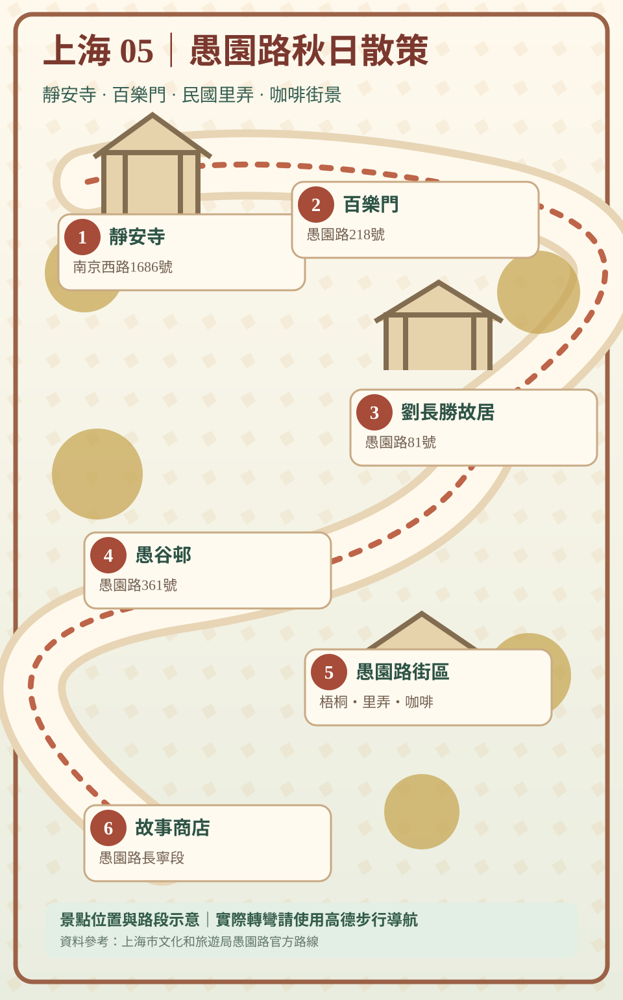

愚園路・靜安秋日 Citywalk

沿路導航
慢遊建議
從靜安寺出發，沿愚園路欣賞梧桐、歷史建築及里弄。百樂門、愚谷邨可作建築拍照點，途中選擇咖啡店休息。景點之間依高德步行路線行走。
餐飲・活動與優惠查詢
以下店家名稱與地址取自先前水彩圖，尚未完成分店、營業日及優惠核實。美團連結僅供搜尋，不代表已有折扣；請以先生的大陸門號登入後確認。

從靜安寺出發，沿愚園路欣賞梧桐、歷史建築及里弄。百樂門、愚谷邨可作建築拍照點，途中選擇咖啡店休息。景點之間依高德步行路線行走。
以下店家名稱與地址取自先前水彩圖，尚未完成分店、營業日及優惠核實。美團連結僅供搜尋，不代表已有折扣；請以先生的大陸門號登入後確認。